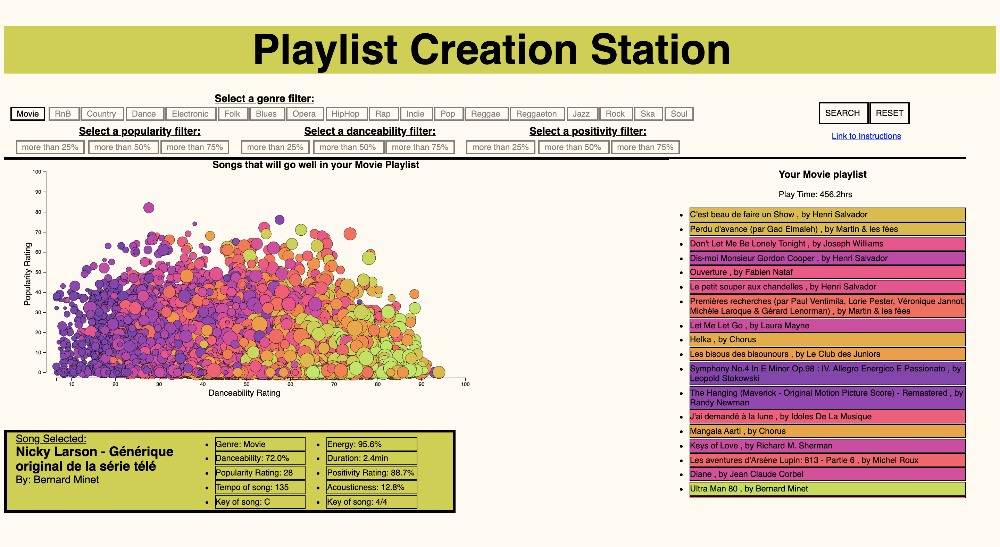

Creation Station Intructions
Basic Instructions and Information

-
The creation Stations is separated in to 3 distinct visuals to aid your playlist creation
-
The Bubble Chart
-
The Playlist
-
The Info-graphic
Using all three of the visuals will be helpful for you to mold your ideal playlist.
-
The visuals are capable of being interacted with, feel free to move you mouse around the screen and enjoy the bubbles and colors.
-
The color of each song represents the songs positivity of a song (The closer the color is to green, the more positive a song is; the closer the color is to purple, the more negative a song is.)
-
The size of each song represents the songs energy (More energetic songs have larger bubbles.)
-
To start the program, start by selecting a single genre and press 'Search' Butoon located with the 'Action' buttons
-
If the program ever seemes not to be working correctly, simply press the 'Reset' Button located with the 'Action' buttons
-
Fun fact! I've never broken the program so hard that the reset button won't work. Therefore, just press reset if your ever unsure about something you are doing
-
To hone your playlist search select more drastic filter options.
-
Try combining filters, utilize your options to create the ultimate playlist.